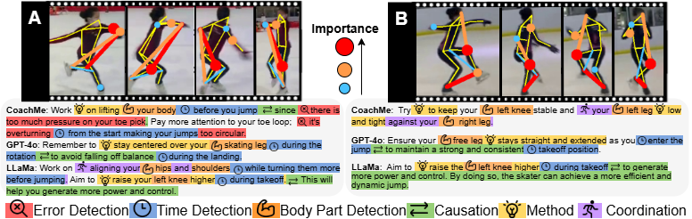
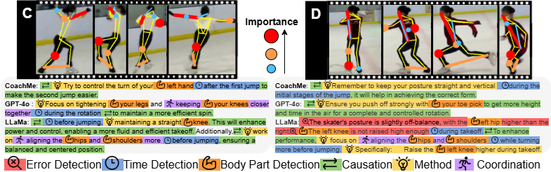
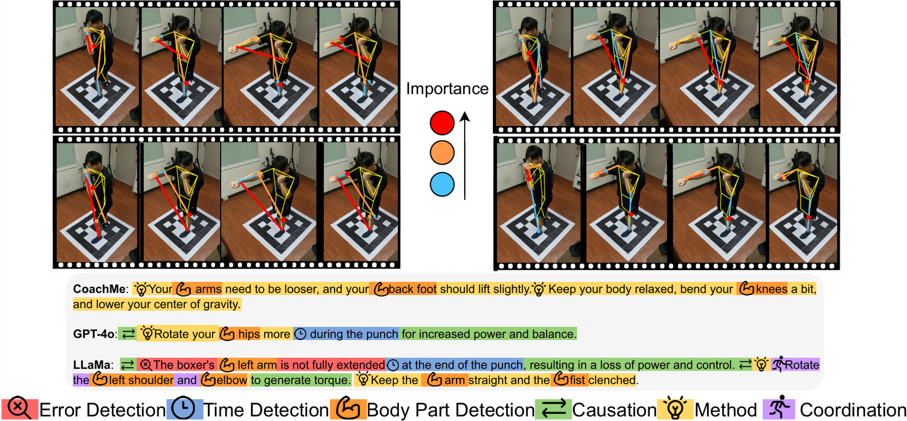

CoachMe
CoachMe aims to democratize access to coaching, helping athletes improve on their own. Users can upload videos of their movements, and CoachMe analyzes the motion to provide precise and actionable instructions.
Why is this challenging?
If we upload a video to a multimodal model such as GPT, it often produces generic and redundant advice — which is not effective for athletes. The real challenge of the “Motion to Instruction” task is generating feedback that is highly informative and practical.Our approach
CoachMe simulates the way real coaches think. Since collecting large amounts of professional sports data is difficult, we cannot directly train a model to understand what “correct motion” is. Instead, CoachMe analyzes the learner’s motion, compares it with a reference, and generates coaching instructions based on the differences.

